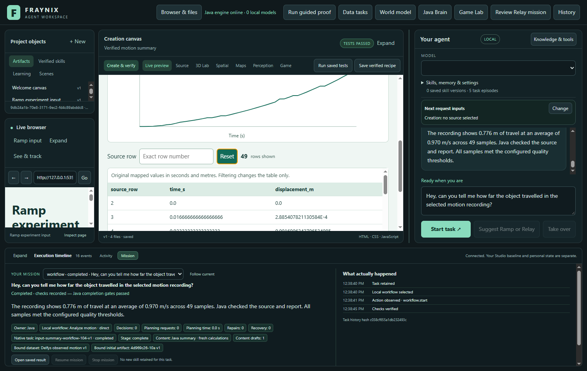
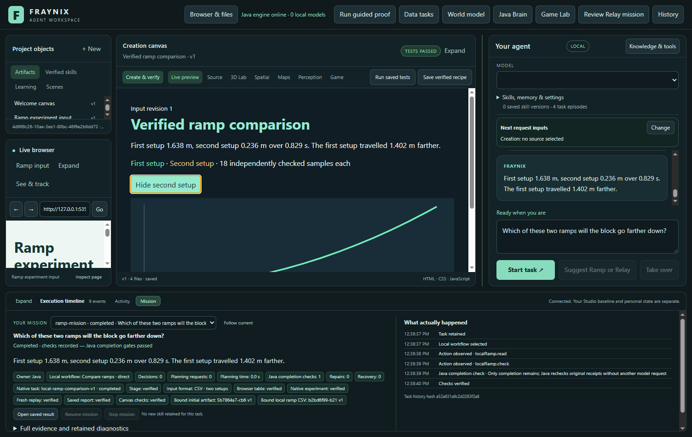
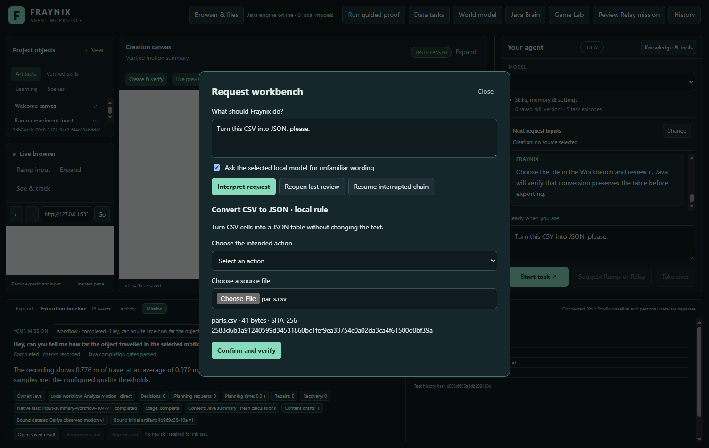
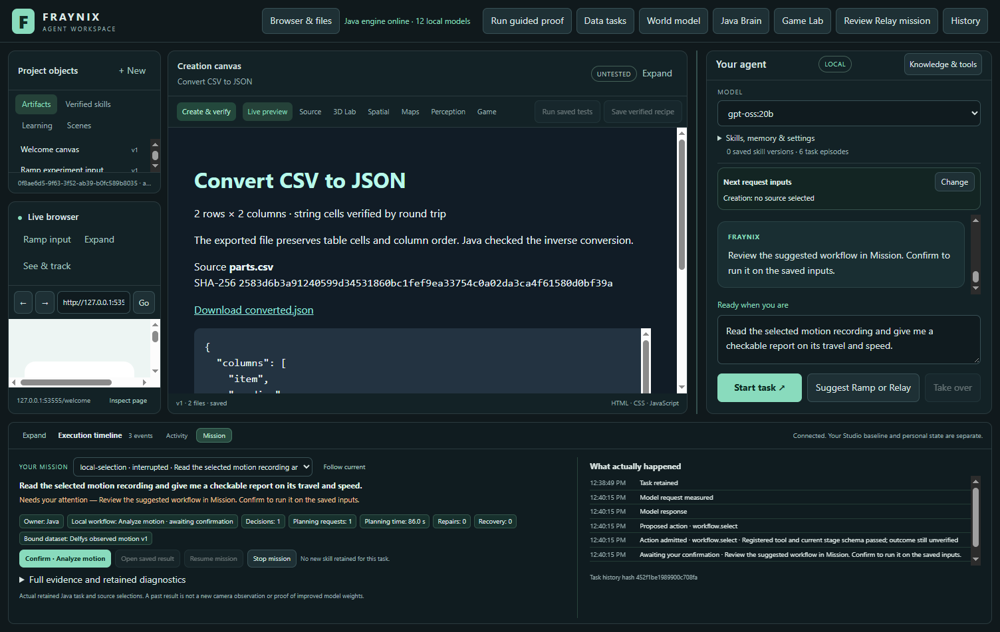
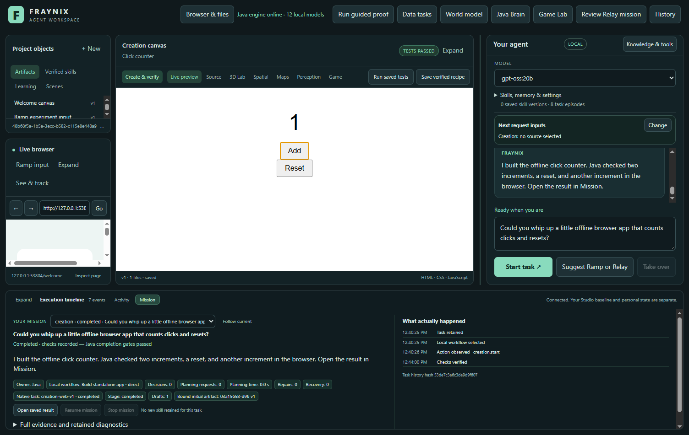

Ask the workspace in everyday language
Ask Chat about a recorded object, compare two saved ramp setups, convert a file or build an offline click counter. Java binds each input and checks the result.

Chat answers from a 49-sample recorded motion dataset

Mission shows an independently replayed ramp comparison from an everyday question

Reviewing the exact CSV before conversion

Mission waits for approval of the local model's proposal

The locally generated click counter passed the Java-owned browser checks
System files
Open source